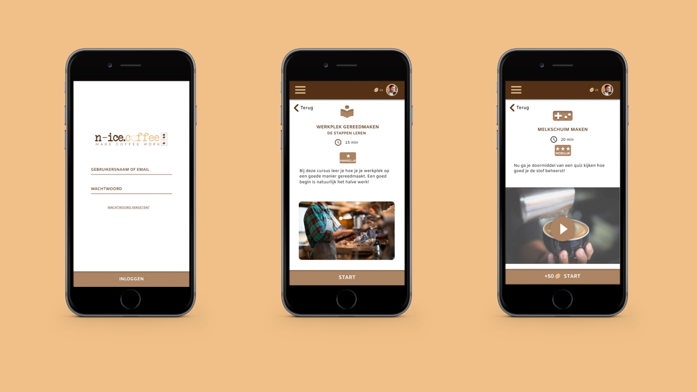
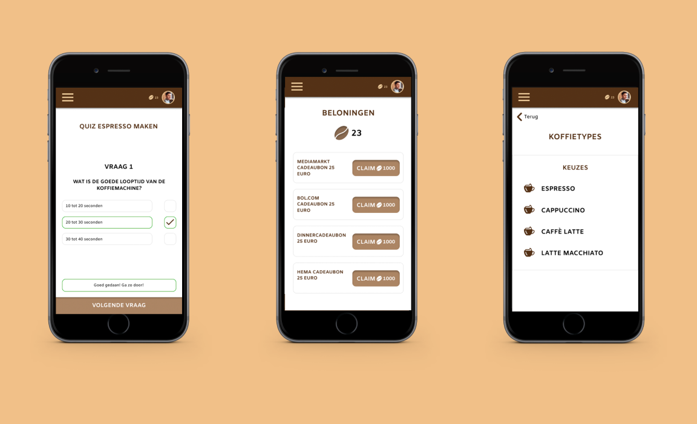
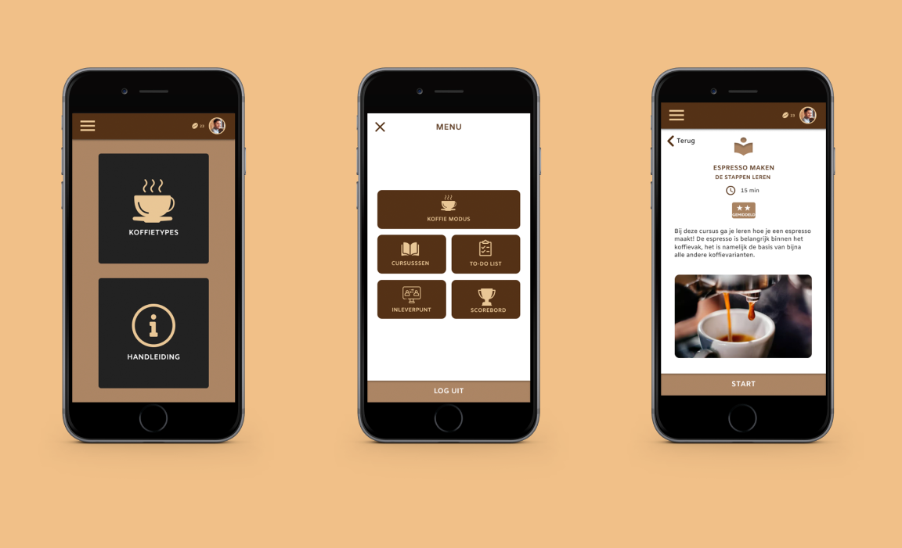

- 
- 
- 
-
Issue
The current curriculum is good, however, the program is not supplemented enough outside the teaching hours. This ensures that they won’t learn as good. It also ensures hat they aren’t stimulated enough to learn. As a result, they don’t develop confidence fast enough and they have less pleasure in learning.
-
Objective
The goal is to design a learning tool that complements the current curriculum into a full program. This will safeguard knowledge and stimulate students more, which will help students develop confidence and make learning enjoyable.
-
Target Audience
The target group consists of young people with a distance to the labor market. These are young people who have just left (special) education, but for whom an MBO education is not an option. Despite that they want to learn who profession specifically. There are also people who come to N-ice.coffee through benefits agencies or through foundations, who also lack an education.
-
Research Question
How do you design a learning tool that fully complements the current curriculum, where knowledge is safeguarded and students will be stimulated, so that students develop confidence and start loving to learning?
-
Conclusion
The curriculum must guarantee knowledge in the shape of practice video’s and practice, which can be achieved through courses, among other things, which allow people to practice their knowledge. Secondly, students must be and remain stimulated, this can be achieved by using gamification. Using a scoreboard, students can achieve their own score and battle for the highest one against each other. Thirdly, self-confidence must be increased. That can be possible by rewarding the student and showing their progress. Finally, baristagairs should also enjoy it. This can be achieved by using things such as gamification and Qoutes.